Sequence alignment¶
Write a python Script to compute the global sequence alignment of two nucleotide sequences using a simple implementation of the Needleman-Wunsch algorithm.
Generate two random sequences of a given length using letters in the set 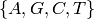 (e.g. AGTGAC, TACGGA)
Construct a simple similarity function 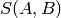:
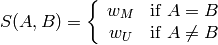
Where
 and
and  are any letters in the symbols set and 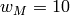
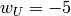 (gap scoring.) This function is used to score the matches
between nucleotides in the sequences.
are any letters in the symbols set and 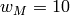
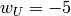 (gap scoring.) This function is used to score the matches
between nucleotides in the sequences.Construct the F-matrix of the sequences, i.e. the matrix which contains information about the matching of every single character in both sequences:
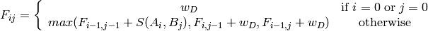
Where
 is the i-th letter in the sequence A and 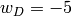
is the i-th letter in the sequence A and 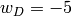The F-matrix has the instructions to build the final alignment. For the example sequences A=AGTGAC, B=TACGGA the F-matrix looks like:
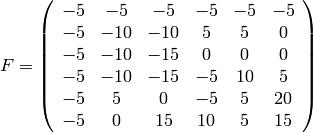
To build the aligned sequences 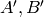, start in the lowermost, rightmost component of the matrix. Compare that element with their neighbors: diagonal (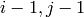), left (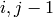) and up (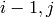). Find the larger value among them and move in that direction.
If your last movement was in the diagonal direction, add to aligned sequences the respective character in the original sequences.
If you move up, add to the aligned sequence
 the respective
character of and to add a symbol ‘-‘ (insertion or
deletion symbol).
the respective
character of and to add a symbol ‘-‘ (insertion or
deletion symbol).Finally if you move to left, add to the aligned sequence the respective character in
and put a ‘-‘ symbol in .Repeat this procedure until you reach the first line or column.
With the sequences provided above the final aligned sequences are:
–GTGAC
TAG-GA-
Bonus: Try to measure the aligning time of long sequences and to figure out the way as the time increases with the length of the sequences.
Bonus: Try changing the values of the gap-scoring ( parameters).
parameters).
A detailed but slightly different explanation of the algorithm could be found in the Wikipedia article: http://es.wikipedia.org/wiki/Algoritmo_Needleman-Wunsch.